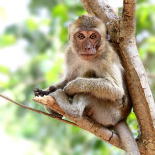

There are more than 260 species of Monkeys found in the world today. They are derived from early primates that have been around for millions of years. There isn’t enough information about evolution to say with certainty how they came to be.
Sharing 91% DNA similarities with humans is the Baboon. This particular Monkey is often argued to be an Ape instead. However, science has placed them into the area of being a Monkey based on a variety of contributing factors
The Capuchin Monkey belongs to the New World Organization. They only live in the trees and they only are active during the day.
The Blue Monkey is very unique in how it looks but it isn’t blue. It is also know as the Diademed Monkey. This species belongs to the Old Monkey World. There are a couple of known subspecies.
The Common Marmoset is a very different type of Monkey. It is often called the Cotton Eared Marmoset. The unique physical appearance of this Monkey is very different. They have a gray body and as they get older they develop white tuffs that extend from the sides of the face.
The Common Squirrel Monkey is one that gets its name for looking very similar to the Squirrel. They are part of the New World Monkeys. The tropical regions of South America is where you will find the Common Squirrel Monkey.
A Gibbon is often described as a Monkey but most classify them as Apes. The controversy often continues and so you will find information out there about them in both categories. You may hear them called the Lesser Apes at times too.
The Golden Lion Tamarin is a very appealing small Monkey that fits into the New World. They have long been part of legends and stories due to they golden color that shines in the sunlight.
The Howler Monkey is a large type of New World Monkey. There name comes from the fact that they are louder than any other types of Monkeys.
The Japanese Macaque is also called the Snow Monkey. It belongs to the Old World species. Two subspecies have been identified. They have a vital role in the early Buddhist religion. This continues today throughout the works of this particular religion.
Many people mistake the Mandrill for the Baboon but they are different. Yet they do look similar to each other. They are members of the Old World Monkeys. In fact, they were once classified as Baboons.
The Proboscis Monkey is also called the Monyet Belanda Monkey, which means the long nosed Monkey. It belongs to the Old World classification. In the Egyptian Culture they were worshipped as a very unique animal and believed to be special to the gods
There are many names that you may hear the Pygmy Marmoset called by. They are known as the Pocket Monkey, Little Lion, and the Dwarf Monkey.
The Rhesus Macaque is also known as the Rhesus Monkey. It belongs to the Old World category and is among the best known. These are small Monkeys with pink faces that don’t have any fur on them.
There are 7 known sub species of the Spider Monkey. They belong to the class of New World Monkeys. They are believed to be the biggest of all the different Monkeys in that particular class.
The Vervet Monkey is an Old World classification. There are 5 known subspecies that have been identified. They have a very unique appearance to them which helps them to be separated from other types of Monkeys found in the world.
Source: Types of Monkeys